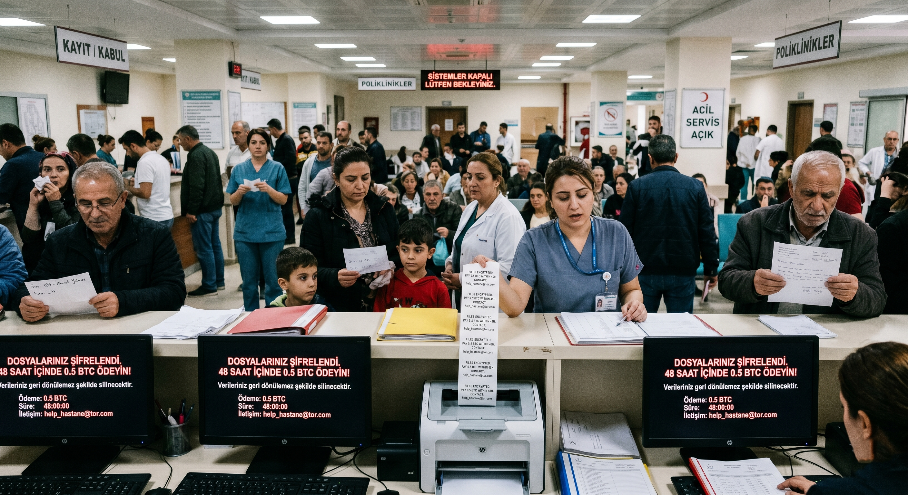
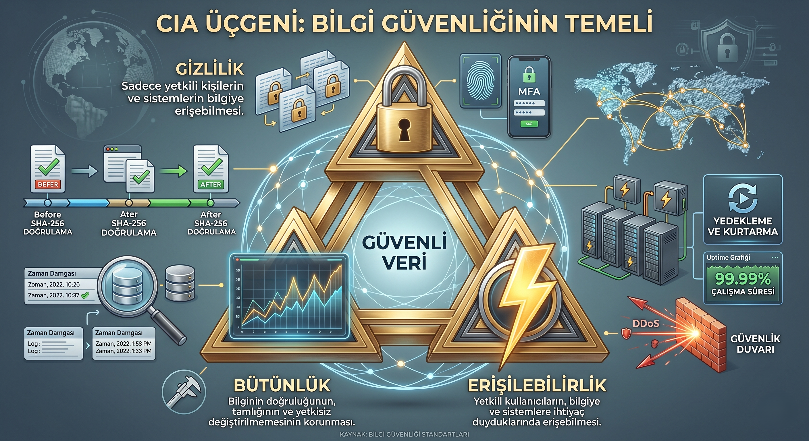
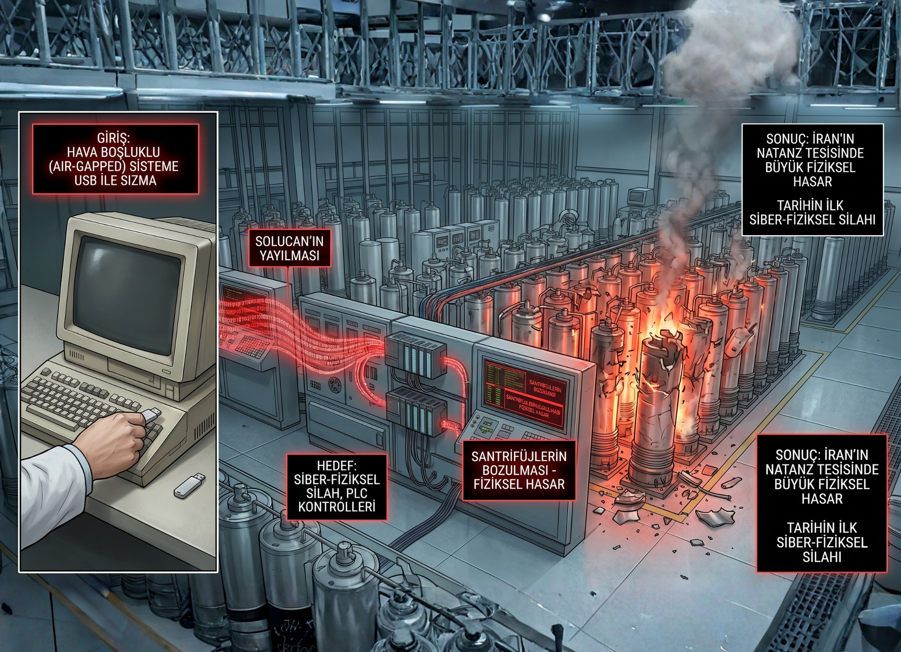
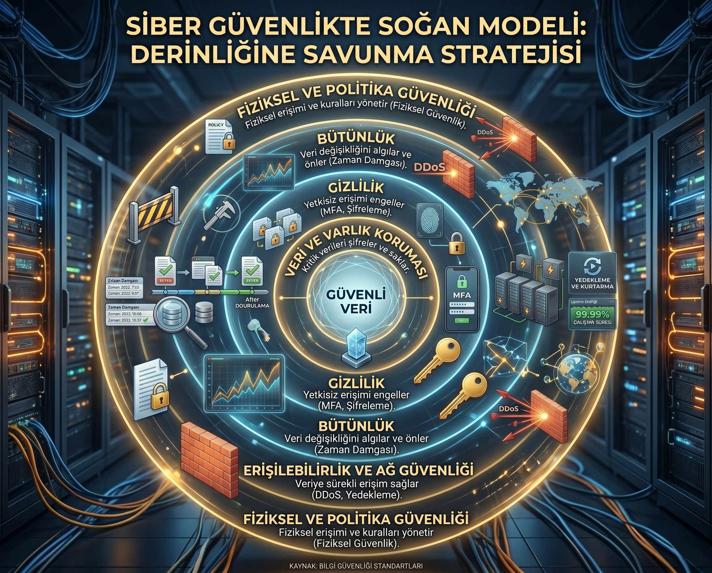

Dijital Kale
12. Hafta: Siber Güvenlik ve Savunma
Hastane Susuyor…
Bir devlet hastanesinde sabah vardiyası başladığında ekranlar siyah, yazıcılar tek bir mesaj basıyordu: "Dosyalarınız şifrelendi. 48 saat içinde 0.5 BTC ödeyin." Acil servis hâlâ açıktı; ancak randevu, tahlil ve görüntüleme sistemleri erişilemez. Hastalar ellerinde reçete kağıtları, kalemle yazılmış sıralarla bekliyordu.
Saldırının kaynağı? Tek bir çalışanın açtığı, "İK Tebligatı.zip" adlı sahte bir dosya.

images/hospital_lockdown.png
karanlık hastane, ekranlarda fidye notu
Sayılarla Cephede Türkiye
USOM, IBM "Cost of a Data Breach" 2023 ve TÜBİTAK BİLGEM raporları
Bir İhlalin Ortalama Maliyeti
IBM 2023 küresel ortalama
Saldırının Fark Edilme Süresi
Saldırgan içeride 6+ ay
İhlallerde İnsan Faktörü
Verizon DBIR 2023
"En pahalı güvenlik duvarı, eğitilmemiş çalışanın yanında bir kapı süsüdür."
CIA Üçlüsü
Siber güvenlik bir disiplin değil, üç sütun üzerine kurulu bir denge sanatıdır.
Gizlilik
Bilgi yalnızca yetkili kişiler tarafından erişilebilir.
İhlal: Veri sızıntısı
Bütünlük
Veri değiştirilmemiş, manipüle edilmemiştir.
İhlal: Tahrifat / sahtecilik
Erişilebilirlik
Sistem ihtiyaç duyulduğunda erişilebilir olmalıdır.
İhlal: DDoS / fidye yazılım
Saldırılar Hangi Sütunu Yıkar?
🔓 Sniffing / Veri Sızdırma
Hedef: Gizlilik — şifreleri, mesajları izinsiz okuma.
✏️ Man-in-the-Middle
Hedef: Bütünlük — iki taraf arasında mesajı değiştirme.
🌊 DDoS
Hedef: Erişilebilirlik — sunucuyu trafikle boğma.
🔒 Ransomware
Hedef: Tüm üçlü — verir, şifreler, fidye ister.

images/cia_triangle.png
CIA üçgeni — kilit, grafik, şimşek
Vaka: Stuxnet (2010)
Stuxnet, İran'ın Natanz nükleer tesisindeki uranyum santrifüjlerini hedefleyen, tarihin ilk siber-fiziksel silahı kabul edilen bir solucandır. Hava boşluklu (air-gapped) sistemlere bir USB ile sızdı.
⚙️ Hedef
Siemens PLC kontrolündeki santrifüjler — fiziksel donanım.
💥 Etki
~1,000 santrifüj imha edildi; nükleer program yıllarca geriledi.
🌍 Miras
"Devlet destekli siber savaş" kavramının doğum belgesi.

images/stuxnet_centrifuge.png
santrifüj koridoru + kod akışı
Profesyonel Saldırganlar: APT
Advanced Persistent Threat — devlet destekli, uzun soluklu, hedefli operasyonlar
APT28 (Fancy Bear)
DNC sızması, NATO hedefleri
APT41
Endüstriyel casusluk
Lazarus Group
Sony Pictures, kripto soygunları
USOM Müdahale
7/24 ulusal koordinasyon
Türkiye, 2018'den beri kritik altyapıyı koruyan Ulusal Siber Güvenlik Stratejisi kapsamında işliyor.
Defense in Depth: Soğan Modeli
Tek bir savunma duvarı yeterli değildir. Saldırganın geçmesi gereken her katman ona zaman ve maliyet kaybettirir.
Fiziksel
Sunucu odası, kilit, kamera, biyometri
Çevre / Network
Firewall, IDS/IPS, segmentasyon
Sistem & Uygulama
Patching, EDR, güvenli kod (OWASP)
Veri
Şifreleme, DLP, yedek
İnsan
Eğitim, simülasyon, kültür

images/defense_layers.png
eşmerkezli 5 halkalı dijital kalkan
Şifreleme: Anlamı Tutsak Etmek
$ echo "Toplantı 14:00 — banka şifresi: ipek1995"
> AES-256-GCM | key derivation: PBKDF2
> generating IV...
————————————————
ciphertext:
9f3a2c…b71e (256 byte)
Simetrik (AES)
Tek anahtar — hızlı. WhatsApp, BitLocker.
Asimetrik (RSA / ECC)
Açık + özel anahtar çifti. HTTPS sertifikaları, e-imza.
Hash (SHA-256)
Tek yön — bütünlük doğrulaması, parola depolama.
Zero Trust: Kimseye Güvenme, Her Şeyi Doğrula
Eski model: "Ağa girdin → güvendesin." Modern model: "Her istek, her seferinde, her cihazdan yeniden kanıtlanır."
🧠 Bildiğin
Parola, PIN — hatırlanan bilgi
📱 Sahip Olduğun
Authenticator, donanım anahtarı (YubiKey)
👁 Olduğun
Parmak izi, yüz, ses — biyometrik
Kaynak: Microsoft & Google saldırı engelleme oranları (2023)
Hacker'ın Üç Şapkası
Beyaz Şapka
İzinli, yasal, etik — sızma testi uzmanı, bug bounty araştırmacısı.
Niyet + İzin = ✓
Gri Şapka
İyi niyetli ama izinsiz — açığı bulup haber veriyor; yine de suç.
Niyet ✓ / İzin ✗ = ?
Siyah Şapka
Kötü niyet, izinsiz — para, casusluk, zarar — saldırgan.
Niyet ✗ / İzin ✗ = Suç
Senaryo: Açığı Buldun
Sevdiğin bir e-ticaret sitesinde gezerken adres çubuğunda ?id= parametresini değiştirdiğinde başkasının fatura PDF'sini açabildiğini fark ettin. Sitenin Bug Bounty programı yok.
Sorumlu İfşa
Sızıntıyı kullanmadan, security@... adresine bildir; ek araştırma yapma.
Daha Fazlasını Dene
"Ne kadar veri çekebiliyorum?" diye scriptle dene, sonra haber ver.
🔵 Faydacı Bakış
Açık duyurulup kapatılırsa binlerce müşteri korunur. Net fayda = pozitif. Ama "daha fazlasını denemek" zarar yayılımı riski.
🟣 Kant / Deontolojik
İzinsiz erişim her durumda yanlıştır — niyet meşrulaştırmaz. İlk fark ettiğinde dur.
🟢 Erdem Etiği
Bilgili ve dürüst bir uzman, açığı sömürmeden raporlar — profesyonellik karakterdir.
Hukuki: Türkiye'de izinsiz erişim → TCK 243. "İyi niyetim vardı" savunması mahkemeyi bağlamaz.
Türkiye'de Siber Savunma Ekosistemi
USOM / TR-CERT
Ulusal Siber Olay Müdahale
usom.gov.tr
BTK Bug Bounty
Açık ifşa programı
btk.gov.tr
Beyaz Şapka CTF
Üniversite yarışmaları
CTFTime / SiberVatan
Sertifikalar
Kariyer adımları
CEH / OSCP / CISSP
🛡 OWASP Top 10
Web uygulamalarındaki en kritik açıklar listesi.
📐 NIST CSF
5 Fonksiyon: Identify → Protect → Detect → Respond → Recover.
🌐 ISO 27001
Bilgi güvenliği yönetim sistemi standardı.
Kişisel Güvenlik Kiti
Şifre yöneticisi kullan — 1Password, Bitwarden, KeePass
2FA her hesapta — SMS yerine Authenticator
3-2-1 yedekleme: 3 kopya, 2 farklı medya, 1 offline
Güvenlik güncellemelerini otomatik aç — patch oyunun yarısı
E-postada linke tıklamadan üzerine gel — URL'yi gör
Açık Wi-Fi'da VPN — banka ve mail asla
Tanımadığın USB'yi takma — Stuxnet böyle yayıldı
Tarayıcıda izleyici engelleyici — uBlock Origin, Privacy Badger
Saldırıya uğradın mı? Cihazı kapat, USOM'a bildir
Haftaya Bakış
Sıradaki Konu: Sosyal Medya ve Algoritmalar
BU HAFTA NE ÖĞRENDİK?
CIA
Gizlilik / Bütünlük / Erişim
Stuxnet
Siber-fiziksel saldırı
Defense in Depth
5 katmanlı savunma
Beyaz Şapka
Etik + İzin = Yasal
"Güvenlik bir ürün değil, bir süreçtir." — Bruce Schneier